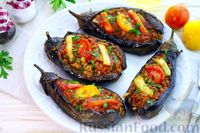
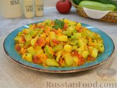
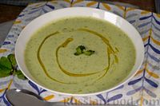
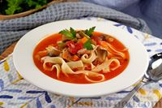
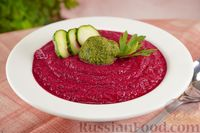

| Название блюда | Оценка от 0 до 10 | Ссылка на рецепт | Фото блюда |
|---|---|---|---|
| Фаршированные баклажаны с мясом и овощами | 10 | Ссылка |  | >
| Кабачки, тушенные с помидорами | 8 | Ссылка |  | >
| Холодный суп с огурцами и авокадо | 1 | Ссылка |  | >
| Лагман с баклажанами | 10 | Ссылка |  | >
| Холодный суп-пюре из свеклы с соусом песто | 3 | Ссылка |  | >